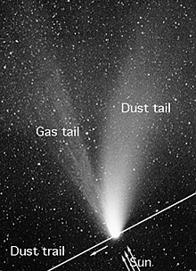

. Спостереження 29 березня 1997 року в Пазині, Хорватія.")
Походження
Комети з'являються з периферії Сонячної системи, тому їхні орбіти постійно змінюються під впливом гравітації основних планет. Унаслідок цього деякі з комет переходять на близько-сонячні орбіти і Сонце знищує їх, коли вони наближаються до нього, інші крижані брили назавжди залишають Сонячну систему. Яскрава комета — одне з найцікавіших космічних явищ і завжди привертає увагу.
Вважають, що комети походять із хмари Оорта, розташованої на великій відстані від Сонця; вона складається із «решток», що залишилися після конденсації сонячної туманності. Зовнішні краї цієї хмари досить холодні для того, щоб вода існувала там у твердому (а не газоподібному) стані. Тіла, розташовані на закраїнах Сонячної системи, з правила, складаються з летких речовин (водяних, метанових та інших льодів), що випаровуються при підлітанні до Сонця.
Усього виявлено понад 400 короткоперіодичних комет[3]. З них близько 200 спостерігалося в більш ніж одному проходженні перигелію. Багато з них входить до так званих сімейств. Наприклад, приблизно 50 найкороткоперіодичніших комет (їхній повний оберт навколо Сонця триває 3—10 років) утворюють сімейство Юпітера. Дещо менші сімейства — Сатурна, Урана та Нептуна (до останнього, зокрема, належить знаменита комета Галлея).
Комети, що виринають із глибини космосу, виглядають як туманні об'єкти, за якими тягнеться хвіст, що його довжина іноді сягає мільйонів кілометрів. Ядро комети — це тіло з твердих частинок і льоду, оповите туманною оболонкою, яка називається комою. Ядро діаметром у кілька кілометрів може мати навколо себе кому у 80 тис. км у поперечнику. Потоки сонячних променів вибивають частинки газу з коми і відкидають їх назад, витягаючи в довгий димчастий хвіст, який тягнеться за нею в просторі.
Яскравість комет дуже сильно залежить від їхньої відстані до Сонця. Лише дещиця з усіх наявних комет наближається до Сонця і Землі настільки, щоб їх можна було побачити неозброєним оком. Найпомітніші з них іноді називають «Великими кометами».
Астрономи пояснюють настільки різні форми кометних хвостів у такий спосіб. Матеріал, з якого складаються комети, має неоднаковий склад та властивості, тому й по-різному реагує на сонячне випромінювання. Таким чином, хвости космічних мандрівниць набувають різної форми.
Хвости комет різняться за довжиною та формою. У деяких комет вони тягнуться через усе небо. Наприклад, хвіст комети, що з'явилася в 1944 році, був завдовжки 20 млн км. А комета C/1680 V1 мала хвіст, що протягнувся на 240 млн км. Також були зафіксовані випадки відділення хвоста від комети.
Теорію хвостів і форм комет розробив наприкінці XIX століття російський астроном Федір Бредіхін (1831—1904). Йому ж належить і класифікація кометних хвостів, що використовувалася в тогочасній астрономії. Бредіхін запропонував відносити хвости комет до трьох основних типів: прямі та вузькі, направлені прямо від Сонця; широкі й трохи викривлені, що ухиляються від Сонця; короткі, сильно відхилені від центрального світила.
Астероїди походять з іншого джерела, але дуже старі комети, які втратили весь матеріал для випаровування, можуть дуже нагадувати астероїди.
Відкриття сотень гігантських комет, названих кентаврами, у зовнішній планетній системі за останні два десятиліття означає, що ці об'єкти представляють набагато більшу небезпеку для життя, ніж астероїди, як звітує команда астрономів[4].
Будова комет
Як правило, комети складаються з «голови» — невеликого яскравого згустку-ядра, що оточена світлою туманною оболонкою (комою), яка складається з газу та пилу.
Тривале існування низки періодичних комет, що багаторазово пролітали поблизу Сонця, пояснюється незначною втратою речовини при кожному прольоті (через утворення пористого теплоізоляційного шару на поверхні ядер або наявності в ядрах тугоплавких речовин).
Ядро

Ядро — тверда частина комети, що має порівняно невеликий розмір. Навколо ядра активної комети (при його наближенні до Сонця) утворюється кома.
Ядра комет складаються з льоду з додаванням космічного пилу і заморожених летких сполук: монооксиду та діоксиду вуглецю, метану, аміаку[7]
Кома
Кома — хмара пилу й газу, що оточує ядро комети. Кома та ядро утворюють «голову» комети. Із наближенням комети до Сонця «голова» збільшується, інколи з'являється хвіст
Кома комети має кулясту форму й іноді простягається на 100 тис. — 1,4 млн км від ядра[8].
Хвіст
У комет із наближенням до Сонця утворюється «хвіст» — слабка світна смуга, що в результаті дії сонячного вітру найчастіше спрямована у протилежну від Сонця сторону.
Хвости комет розрізняються довжиною й формою, не мають різких обрисів і практично прозорі — крізь них
добре видні зірки, — тому що утворені з надзвичайно розрідженої речовини. Склад її різноманітний:
газ чи дрібний пил, або ж суміш того й того. Цей пил схожий з астероїдним матеріалом сонячної
системи, що з'ясувалося в результаті дослідження комети Вільда (2) космічним апаратом «Стардаст»
(«Зоряний пил»).
По суті, це «видиме ніщо»: людина може спостерігати хвости комет тільки тому, що
газ і пил світяться. При цьому світіння газу пов'язане з його йонізацією ультрафіолетовими променями
й потоками часток, що викидаються із сонячної поверхні, а пил просто розсіює сонячне світло.
Вивчення комет
-
В Україні
У народі комети називали «мітлами»[9] і «віхами»[10]. Слово комета, що походить від лат. cometa (від дав.-гр. κομήτης — «хвостата») на початок XX ст. вже узвичаїлося в народному мовленні[11].
Comets-close
Докладне уявлення про них астрономи отримали завдяки успішним «візитам» в 1986 до комети Галлея радянських космічних апаратів «Вега-1», «Вега-2» та європейського «Джотто». Прилади, встановлені на цих апаратах, передали на Землю зображення ядра комети й різноманітних відомостей про її оболонку. Виявилося, що ядро комети Галлея складається в основному зі звичайної криги (з невеликими вкрапленнями вуглекислих і метанових льодів), а також пилових часток. Саме вони утворюють оболонку комети, а з наближенням її до Сонця частина з них — під тиском сонячного вітру — переходить у хвіст.
Ядро комети Галлея має неправильну форму; його розміри дорівнюють кільком кілометрам: 14 — у довжину, 7,5 — у ширину; обертається ядро навколо своєї осі, що майже перпендикулярно площині орбіти комети. Період обертання дорівнює 53 години.
У 2005 році космічний апарат НАСА Deep Impact («Глибоке зіткнення») наблизився до комети Темпеля 1, і за допомогою апарату Impactor («Ударник»), що відділився від основного КА, на величезній швидкості 10,3 км/с (37 000 км/год) зіштовхнувся з кометою, протаранив комету та передав зображення її поверхні.
Обробка даних, отриманих при спостереженні цього зіткнення, показала, що речовина верхнього шару комети сильно відрізняється від того, що там очікували виявити. Вважалося, що її ядро являє собою величезну брилу льоду із вкрапленням кам'яних гірських порід, у вигляді дрібних уламків. Насправді виявилося, що ядро комети складається з дуже пухкого матеріалу, що нагадує навіть не купу каменів, а величезну брилу пилу, пори в якому становлять 80 %.
Коли відбулося зіткнення зонда з ядром комети, то викинута речовина злетіла вузьким високим стовпом. Таке можливо лише при дуже пухкому й легкому ґрунті. Результати цього ефектного експерименту в космосі привели до появи нової моделі будови ядра комет. У минулому ядро вважали забрудненою сніжною кулею або засніженою кам'яною брилою, а тепер його розглядають як досить пухке тіло, трохи подовженої форми, що складається з пилу. Залишається незрозумілим, як у такій «пухнатій» субстанції можуть зберігатися кратери, пагорби й різкі уступи поверхні, які чітко видні на знімках ядра комети Темпеля-1, отриманих як із самої станції Deep Impact, так і з ударного апарата, що передав останні зображення незадовго до зіткнення. На цих докладних знімках видно, що поверхня не згладжена й не покрита пилом — вона має досить виразні, різкі форми рельєфу й виглядає приблизно так само, як поверхня Місяця, — з безліччю кратерів і невеликих пагорбів.